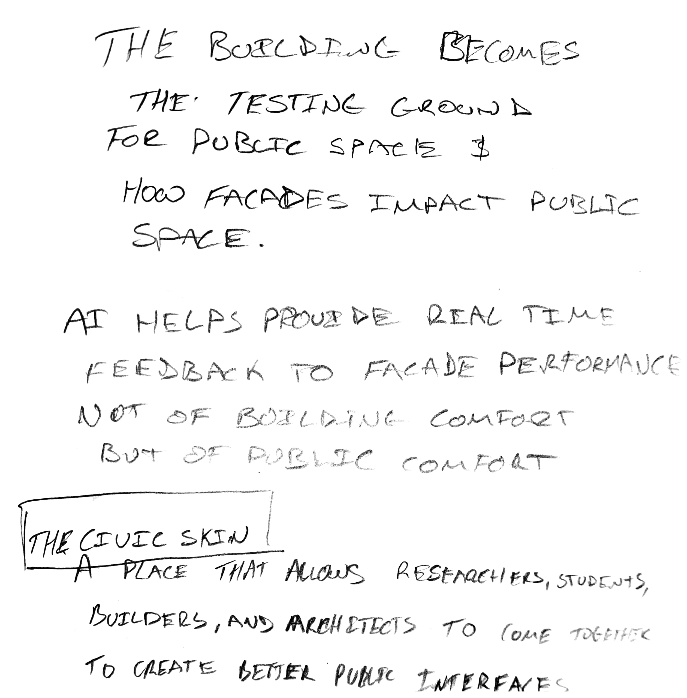
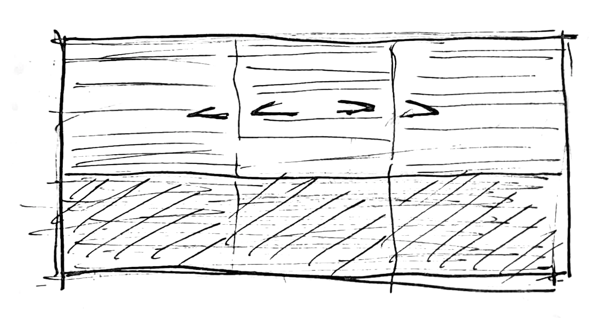

Development
Material exploration and The Civic Skin
I began the semester with an interest in 3D printing, extruded terracotta and how façade elements are made. I wanted to understand how their shape could influence material use and environmental performance. Research into terracotta profiles introduced possibilities for using less material and affecting how heat is reflected into the surrounding environment. This led me to consider how the façade could contribute to more comfortable public spaces, including shaded thresholds and places to pause.
The Civic Skin, a façade research centre, gave these interests a programme. As the proposal developed, however, I felt that its architectural organisation and purpose needed a stronger argument. Feedback reinforced this concern and prompted me to reconsider where the material and fabrication research could lead.
Learning Journal / Process studies
The building edge as occupied space
The earlier Civic Skin notes identify public comfort and the building edge as subjects for investigation. They record a research intention, rather than a demonstrated environmental outcome.

From The Civic Skin to domestic cladding
Through tutor discussions, I began exploring how the technology investigated in The Civic Skin could be applied to domestic architecture. My attention moved towards cladding and prefabricated façade elements, considering how these could improve housing quality and speed up the production of new homes.
This direction connected my interest in fabrication with concerns about the housing crisis and productivity in the construction industry. It also raised questions about what these elements could offer the people living behind them. I began considering how the façade could contribute to the use of a home, alongside its construction and environmental performance.
From cladding to apartment living
As I looked more closely at housing, my attention shifted towards domestic life in apartments. I became interested in perceived privacy and the transitions between public, shared and private space. I wanted to explore how apartments could offer qualities associated with detached and semi-detached homes, including yards, fences, gates, verandas and individual front doors.
These observations informed six principles—arrival, your own front door, inside–outside, privacy gradient, neighbourhood and individual identity. They guided an approach that provided public space, opportunities for personalisation, clear thresholds and an occupiable façade. The envelope became part of the apartment’s domestic territory, offering space for everyday activities outdoors while allowing residents to establish boundaries around their homes.

Learning Journal / Process studies
Resident control at the façade
This exploratory screen study considers open, filtered, sheltered and closed conditions. It records an approach to resident control, rather than a resolved construction detail.


From apartments to multigenerational living
Feedback in October challenged the broad audience of the apartment proposal. I had been considering what might improve housing for the general population, but this had led to a direction that was too generic. The critique encouraged me to focus on more specific circumstances. I began exploring downsizing and multigenerational living, considering how proximity to family could work alongside different needs for privacy, independence and shared space.
This changed how I approached the dwelling plans and their aggregation. I moved from considering an apartment individually to exploring how two homes could work together and how these relationships could shape the building. Horizontally connected homes, vertically connected homes and a joint multigenerational dwelling became three arrangements through which to develop the proposal. Each gave the entrances, outdoor spaces and connections between homes a more specific role in supporting everyday family life.